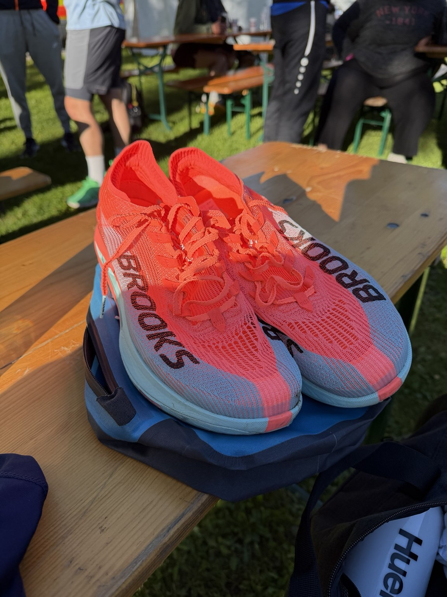
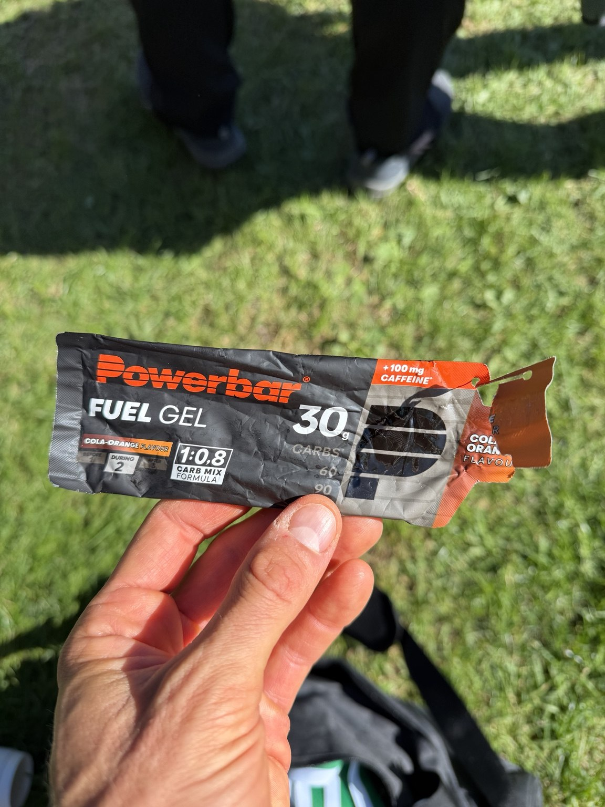
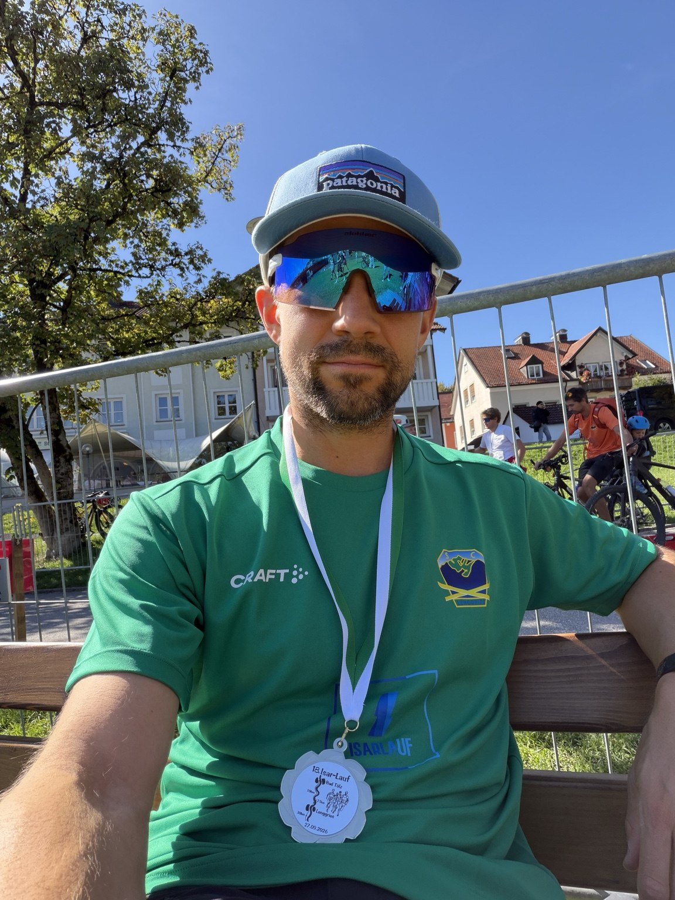
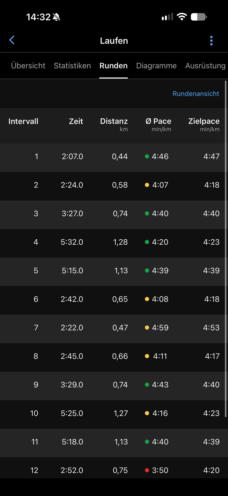
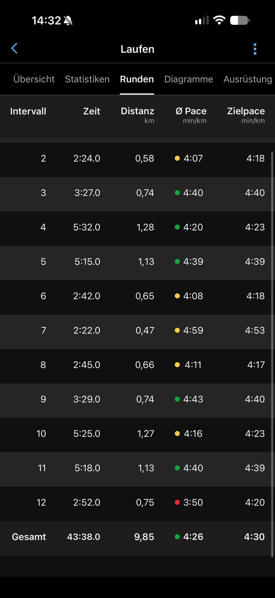
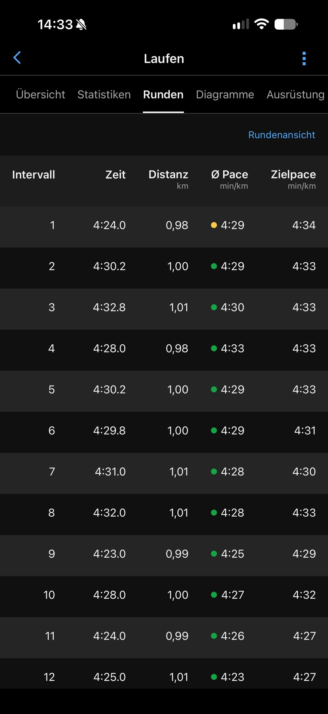
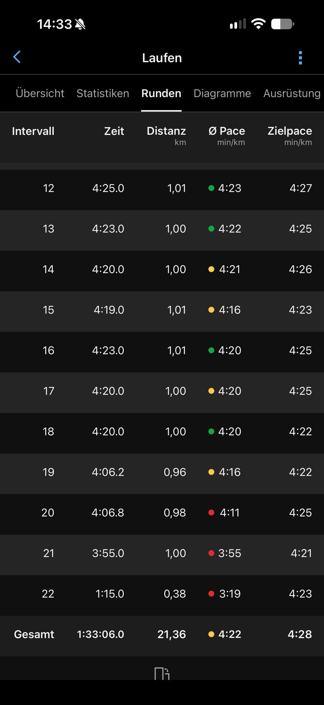
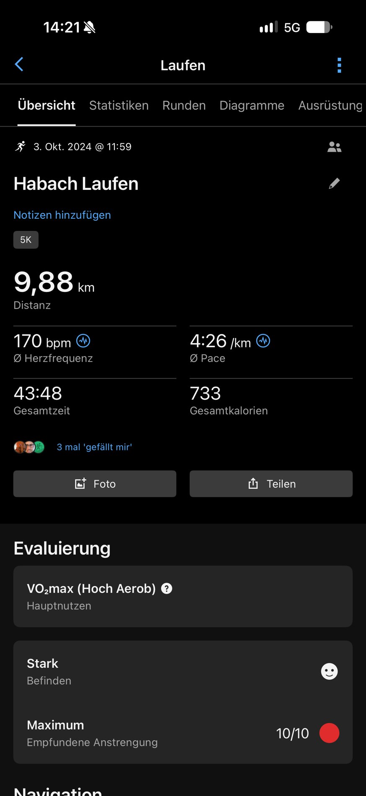
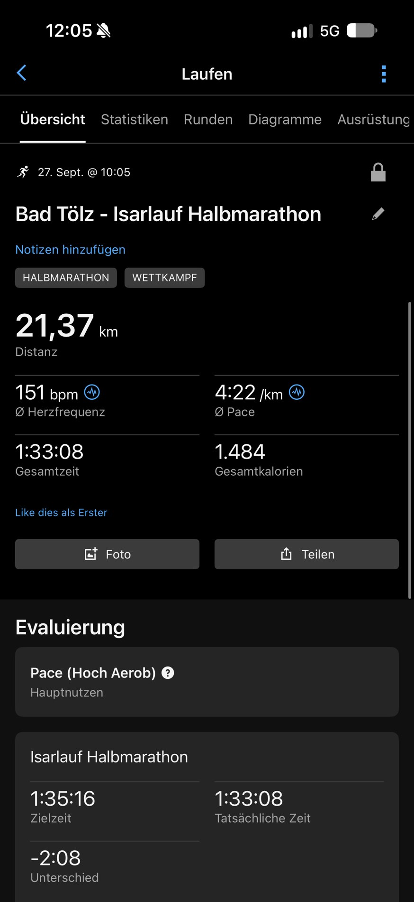
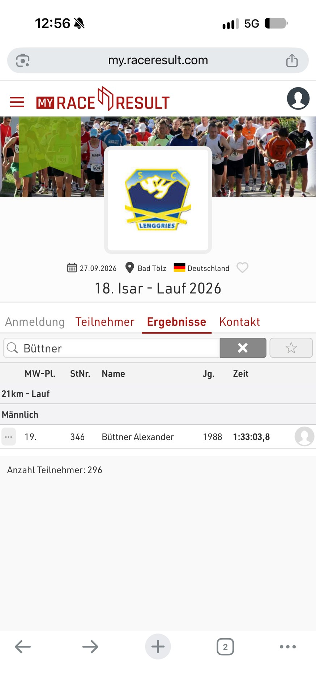

2024 waren zehn Kilometer unter 4:30 min/km eine harte Nummer. Knapp zwei Jahre später hielt ich dieses Tempo beim Halbmarathon – und konnte am Ende noch zulegen.
Habach war eine harte Nummer. Die 43:47 Minuten musste ich mir richtig erarbeiten.
Am 3. Oktober 2024 lief ich beim „Run for Kids“ die zehn Kilometer. Ein bisschen Steigung war auch dabei. Vor allem aber war es wirklich, wirklich anstrengend, dieses Tempo zu halten.
Hinterher trug ich bei Garmin eine zehn von zehn ein: maximale Anstrengung. Und ungefähr so hatte es sich auch angefühlt. Ich hatte mich ganz schön gequält.
Unter 4:30 Minuten pro Kilometer zu laufen war damals ein Erfolg. Dass ich diese Tempomarke knapp zwei Jahre später über mehr als die doppelte Strecke halten würde, macht den Vergleich heute für mich besonders.
Der Unterschied liegt nicht nur in der Distanz.
„Stabil, schnell, aufrecht ins Ziel gekommen.“
Mein Zieleinlauf in Bad Tölz
02Der Weg dazwischen
Training, das sich über Wochen aufbaut.
Zwischen diesen beiden Rennen hat sich viel verändert. Laufen, Krafttraining und Radfahren hatten ihren Platz. In der unmittelbaren Vorbereitung auf Tölz kamen lange, ruhige Läufe und gezielte Tempoeinheiten zusammen.
Beim Nachschauen fällt auf: In den vier Wochen vor Habach waren rund 169 Laufkilometer aufgezeichnet, vor Tölz 178. Der Umfang war also ziemlich ähnlich. Die einzelnen Läufe waren aber länger: Vor Habach lag der längste in diesem Zeitraum bei knapp 15 Kilometern, vor Tölz bei gut 21. Vier Läufe waren mindestens 17 Kilometer lang. Drei davon lagen an den letzten drei Sonntagen vor dem Rennen:
06. SEPTEMBER17,03Kilometer · Fügen
13. SEPTEMBER20,06Kilometer · Benediktbeuern
20. SEPTEMBER21,25Kilometer · Benediktbeuern
Garmin fēnix 8 · lange Läufe im September 2026. Den Vergleich der jeweils vier Wochen vor den Rennen gibt es unten zum Aufklappen.
Dazu kamen Tempoeinheiten, etwa dreimal zehn Minuten bei 4:15 min/km am 18. September. Auch Krafttraining und Radfahren gehörten dazu.
Auch meine Ernährung hat sich in dieser Zeit stark verändert. Ich glaube, dass das eine wichtige Voraussetzung für meine Laufentwicklung war. Sicher trennen kann ich ihren Beitrag vom Training und den anderen Veränderungen allerdings nicht.
03Der Renntag
Ein Plan für den Anfang. Spielraum für das Ende.
Am 27. September 2026 stand ich beim Isarlauf in Bad Tölz am Start. PacePro, der Tempoplan auf meiner Garmin, gab mir unterwegs eine Orientierung. Gerade im Vergleich zu Habach fühlte sich dieser Lauf deutlich entspannter an – obwohl er mehr als doppelt so lang war.
Das heißt nicht, dass es leicht war. Meine Bewertung danach: acht von zehn. Aber auf den letzten fünf Kilometern merkte ich richtig, dass ich gut in Form und gut in Schuss war. Ich konnte deutlich schneller laufen als die PacePro-Vorgaben.

Die Schuhe stehen bereit für den Isarlauf.

Ein Detail vom Renntag: die Verpflegung gehört dazu.
Die letzten Kilometer
Hinten raus war noch etwas da.
Auf den letzten fünf Kilometern wurde aus dem guten Gefühl eine Beschleunigung. Die letzten ungefähr 500 Meter bin ich dann fast noch ins Ziel gesprintet.
≈ 500 m
Fast ein Sprint zum Schluss. Und das Gefühl, noch Reserven zu haben.
Die Garmin-Aufzeichnung zeigt die deutliche Beschleunigung am Ende ebenfalls. Der Clip zeigt einen kurzen Moment an der Strecke.
Ein Moment an der Isar · Originalaufnahme vom Renntag

Bad Tölz, 27. September 2026. Im Ziel.
Mehr als eine Zielzeit
Mit einem richtig guten Gefühl im Ziel.
Offiziell standen am Ende 1:33:03,8 und Platz 19 bei den Männern. Aber was mir besonders geblieben ist, war das Gefühl: stabil, schnell und aufrecht ins Ziel zu kommen.
Wie viel schneller ich insgesamt hätte laufen können, weiß ich nicht. Ich glaube, ein bisschen mehr wäre gegangen. So ins Ziel zu kommen, war auf jeden Fall richtig cool.
In Habach hatte ich mir die Zeit hart erkämpft, inklusive eines schnellen Schlussabschnitts. In Tölz konnte ich am Ende eines viel längeren Rennens noch einmal zulegen und fühlte mich dabei richtig gut. Genau darin steckt für mich der Fortschritt.
04Der Blick zurück
Und ja, die Daten interessieren mich auch.
Für diesen Rückblick habe ich meine Trainingsdaten, die beiden Rennen und meine Erinnerungen mit KI zusammengebracht. So nutze ich Personal AI OS auch sonst: um Entwicklungen nachzuvollziehen und meine nächsten Schritte zu planen.
Besonders hängen geblieben ist mir diesmal, dass die Vorbereitung auf Tölz längere Läufe enthielt, bei ziemlich ähnlichem Gesamtumfang. Wie viel davon im Rennen zusammenkam, lässt sich nicht auf eine einzelne Zahl reduzieren.
Für alle, die es genauer wissen wollen Verläufe über zwei Jahre · PacePro · Originalbelege
Oktober 2024 – September 2026
Was in den zwei Jahren dazwischen passiert ist.
Die längere Distanz und das gute Gefühl im Ziel sind für mich der Fortschritt. In den Daten sieht der Weg dorthin nicht wie eine gerade Linie aus.
Garmin-VO₂max · ml/kg/min
52,0 → 57,9
Die Garmin-Schätzung liegt höher als 2024. Sie ist ein weiterer Anhaltspunkt neben den Rennen; den Sprung im Sommer 2026 sollte man wegen des Datenfeldwechsels vorsichtig lesen.
Monatsmittel der gespeicherten Garmin-Schätzungen. ● bis Juni 2026: Lauf-VO₂max; ■ ab Juli: Garmin-Nutzermetrik VO₂max. Feldwechsel bewusst ohne Verbindungslinie. Juli: nur zwei Einträge. Keine Labormessung.
Gewicht · kg
Runter – und wieder rauf
Im Oktober 2025 liegt das Monatsmittel bei 71,6 kg. Bis September 2026 steigt es auf 77,9 kg. Mein starker Halbmarathon fällt also nicht mit meinem niedrigsten Gewicht zusammen.
Monatsmittel der Runalyze-Gewichtseinträge; mehrere Einträge pro Tag möglich. Der Septembermittelwert umfasst auch die Tage nach dem Rennen. Renntag Tölz: 76,8 kg.
Ruheherzfrequenz · bpm
44,8 → 44,8 bpm
Gleicher Monatsmittelwert zu Beginn und am Ende, dazwischen deutliche Schwankungen. Im Herbst 2025 lagen die Monatsmittel um 39–40 bpm.
Garmin-Tagesruhepuls, je Monat gemittelt. Alle 730 Kalendertage des Zeitraums sind vorhanden. Die Kurve allein erklärt die Schwankungen nicht.
Je 28 Tage vor dem Rennen
Ähnlicher Umfang. Längere Läufe.
Aufgezeichnetes Lauftraining
Habach
Tölz
Gesamtdistanz
169 km
178 km
Längster Lauf
14,9 km
21,3 km
Läufe ab 17 km
0
4
Laufaufzeichnungen
18
16
Der Unterschied liegt in diesen vier Wochen vor allem in den längeren einzelnen Läufen. Die Gesamtkilometer lagen nur rund fünf Prozent auseinander.
Runalyze-Archiv, Sportart Running inklusive Laufband. 05.09.–02.10.2024 und 30.08.–26.09.2026; jeweils 28 Tage ohne Renntag. Summen aus 18 bzw. 16 eindeutigen Aktivitäts-IDs: 169,13 bzw. 178,15 km. Kurze Laufbandaufzeichnungen sind mitgezählt. Kein Beweis für die Ursache der Leistungsentwicklung.
Monat wählen; unter den drei Verlaufsgrafiken erscheinen Wert und Anzahl der zugrunde liegenden Einträge.
Alle Monatswerte und Datenbasis
Abgerufen am 10.10.2026 über freddy. Die drei Kurven zeigen Monatsmittel. VO₂max ist eine Schätzung der maximalen Sauerstoffaufnahme, angegeben pro Kilogramm Körpergewicht; Gewichts- und VO₂max-Verlauf sind deshalb keine völlig unabhängigen Kennzahlen. n zählt Einträge, beim Garmin-Ruhepuls Tage. Quellen werden weder addiert noch als unabhängige Messungen desselben Ereignisses behandelt. Der laufende Runalyze-Abgleich kann den Datenbestand später ergänzen.
Monat
VO₂max
Gewicht · kg
Ruhepuls · bpm
10.2024
11.2024
12.2024
01.2025
02.2025
03.2025
04.2025
05.2025
06.2025
07.2025
08.2025
09.2025
10.2025
11.2025
12.2025
01.2026
02.2026
03.2026
04.2026
05.2026
06.2026
07.2026
08.2026
09.2026
Die letzten drei Monate im Vorjahresvergleich (2025 → 2026):
Monat
Gewicht, Monatsmittel
Ruhepuls, Monatsmittel
Juli
76,2 → 76,6 kg
43,7 → 41,8 bpm
August
75,7 → 76,5 kg
40,9 → 45,8 bpm
September
73,0 → 77,9 kg
39,4 → 44,8 bpm
Beim VO₂max-Vorjahresvergleich fällt der Wechsel des Garmin-Datenfelds in den Sommer 2026. Die Werte stehen deshalb mit dieser Kennzeichnung in der vollständigen Tabelle. Die zusätzlich abrufbaren VO₂max-Werte aus Aktivitätsdateien wurden nicht in diese Kurve gemischt.
Garmin PacePro · Soll und Ist
Am Ende schneller als geplant. In beiden Rennen.
In Habach lag der letzte Abschnitt bei 3:50 statt 4:20 min/km. Auch damals konnte ich zum Schluss also noch zulegen. In Tölz wurde ich über die zweite Rennhälfte hinweg schneller: Abschnitt 20 bei 4:11, Abschnitt 21 bei 3:55 und die letzten angezeigten 380 Meter bei 3:19 min/km.
Der Unterschied bleibt das Gefühl dabei: Habach war für mich eine zehn von zehn. In Tölz kam ich nach mehr als der doppelten Strecke mit einem richtig guten Gefühl ins Ziel.
━ Ist-Pace┄ Soll-Pace · min/km · schneller liegt oben
Habach · 2024
Gesamt laut PacePro-Ansicht: 4:26 / 4:30 min/km (Ist / Soll).
12 Abschnitte und Originalbilder
Abschnitt
km
Ist
Soll
Ist − Soll
1
0.44
4:46
4:47
-1 s/km
2
0.58
4:07
4:18
-11 s/km
3
0.74
4:40
4:40
+0 s/km
4
1.28
4:20
4:23
-3 s/km
5
1.13
4:39
4:39
+0 s/km
6
0.65
4:08
4:18
-10 s/km
7
0.47
4:59
4:53
+6 s/km
8
0.66
4:11
4:17
-6 s/km
9
0.74
4:43
4:40
+3 s/km
10
1.27
4:16
4:23
-7 s/km
11
1.13
4:40
4:39
+1 s/km
12
0.75
3:50
4:20
-30 s/km


Isarlauf · 2026
Gesamt laut PacePro-Ansicht: 4:22 / 4:28 min/km (Ist / Soll).
22 Abschnitte und Originalbilder
Abschnitt
km
Ist
Soll
Ist − Soll
1
0.98
4:29
4:34
-5 s/km
2
1.00
4:29
4:33
-4 s/km
3
1.01
4:30
4:33
-3 s/km
4
0.98
4:33
4:33
+0 s/km
5
1.00
4:29
4:33
-4 s/km
6
1.00
4:29
4:31
-2 s/km
7
1.01
4:28
4:30
-2 s/km
8
1.01
4:28
4:33
-5 s/km
9
0.99
4:25
4:29
-4 s/km
10
1.00
4:27
4:32
-5 s/km
11
0.99
4:26
4:27
-1 s/km
12
1.01
4:23
4:27
-4 s/km
13
1.00
4:22
4:25
-3 s/km
14
1.00
4:21
4:26
-5 s/km
15
1.01
4:16
4:23
-7 s/km
16
1.01
4:20
4:25
-5 s/km
17
1.00
4:20
4:25
-5 s/km
18
1.00
4:20
4:22
-2 s/km
19
0.96
4:16
4:22
-6 s/km
20
0.98
4:11
4:25
-14 s/km
21
1.00
3:55
4:21
-26 s/km
22
0.38
3:19
4:23
-64 s/km


Übertragen aus meinen vier Garmin-Screenshots. Stufen zeigen die durchschnittliche Pace je Abschnitt; die Breite folgt der angezeigten, gerundeten Distanz. Die PacePro-Ansicht summiert Habach mit 43:38 / 9,85 km und Tölz mit 1:33:06 / 21,36 km. Diese Ansicht ist von Aktivitätsgesamtzeit und offizieller Ergebniszeit zu unterscheiden. Der letzte Tölzer PacePro-Abschnitt umfasst 0,38 km; „die letzten 500 Meter“ bleibt meine ungefähre Erinnerung.
Die Zahlen hinter der Geschichte
Die beiden Rennen im Vergleich.
Messgröße
Habach · 2024
Bad Tölz · 2026
Wettbewerb
10-km-Lauf
21-km-Lauf / Halbmarathon
Offizielle Zeit
43:47
1:33:03,8
Garmin: Zeit / Distanz
43:48 / 9,88 km
1:33:08 / 21,37 km
Garmin: Ø Pace
4:26 min/km
4:22 min/km
Garmin: Ø Herzfrequenz
170 bpm
151 bpm
Gewicht am Renntag
81,4 kg
76,8 kg
Eigene Anstrengungsbewertung
10/10 · Maximum
8/10 · Sehr schwer
Eigenes Befinden
Stark
Sehr stark
Offizielle Ergebniszeiten und GPS-Aufzeichnungen sind getrennte Quellen. „Gleiches Tempo“ meint hier die gemeinsame Marke unter 4:30 min/km, nicht sekundengenau identische Geschwindigkeiten. Unterschiedliche Streckenprofile, Bedingungen und Geräte begrenzen den direkten Vergleich. Die niedrigere Herzfrequenz ist kein isolierter Nachweis einer bestimmten Fitnesssteigerung.
Quellen und Originalbelege ansehen
Habach: Veranstalter-Ergebnisliste „Männer 10 km“, 03.10.2024 (Startnummer 26, Platz 9 gesamt männlich, Platz 2 M30). Isarlauf: bereitgestellter Screenshot der offiziellen Ergebnisliste, 27.09.2026 (Startnummer 346, Platz 19 männlich). Garmin-Screenshots: fēnix 6 Pro / HRM-Dual in Habach; fēnix 8 / HRM-Pro Plus in Tölz. Training: Garmin fēnix 8 über freddy. Gewicht: Garmin-Wiegungen, direkt und über Runalyze abgerufen; Monatsmittel Oktober 2025 aus 27 Runalyze-Einträgen. Für Habach ist der Tageswert im Runalyze-Archiv erhalten, obwohl er im direkten Garmin-Abruf fehlt. Persönlicher Rückblick: Alex, 10.10.2026.

Habach · Garmin

Isarlauf · Garmin

Isarlauf · offizielle Wertung
Erneuter Datenabgleich am 10.10.2026: Beide Tagesgewichte sind vorhanden. Die Garmin-fēnix-8-Geschwindigkeitskurve bestätigt eine Beschleunigung im Schlussabschnitt. Die später ergänzten Garmin-PacePro-Screenshots belegen Soll- und Ist-Pace für beide Rennen; alle angezeigten Abschnitte sind oben übertragen. Für Habach melden die Quellen unterschiedliche Höhenmeter; deshalb steht hier kein exakter Höhenvergleich.
Ein persönlicher Verlauf, kein kontrolliertes Experiment: Die Beiträge von Training, Ernährung, Gewicht, Ausrüstung und Rennstrategie lassen sich daraus nicht einzeln bestimmen.
Habach 2024 → Bad Tölz 2026
Die Tempomarke blieb. Mein Gefühl im Ziel war ein anderes.
Zehn Kilometer am Limit. Knapp zwei Jahre später mehr als die doppelte Distanz – und noch Kraft für einen schnellen Schluss.